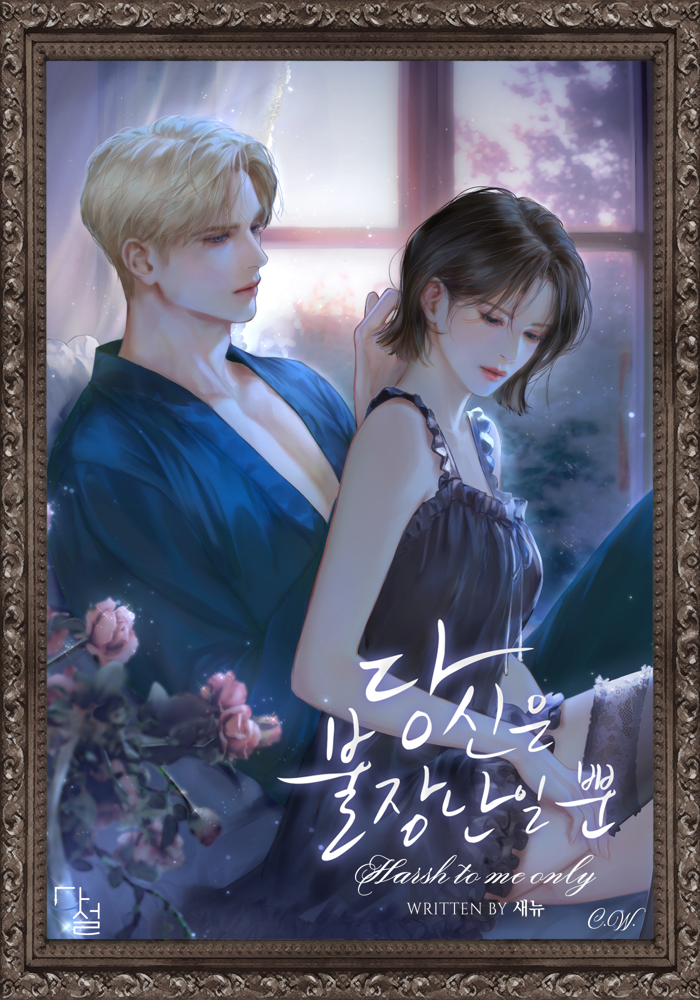
1. 당신은 불장난일 뿐
작가: 새뉴
서양풍 로판 / 판타지 로맨스
구성: 총 8권 (완결)
★ 특이사항: 2024 리디북스 로맨스판타지 단행본 신인상
부모님의 죽음 이후 선대 공작의 후원을 받아 화가로서의 삶을 꿈꾸던 클레어. 하지만 자신을 아버지의 정부라 오해하고 조롱했던 오만한 후원자의 아들이 5년 만에 나타나 그녀를 자신의 정부로 만들려 한다.
네이버 시리즈에서 보기
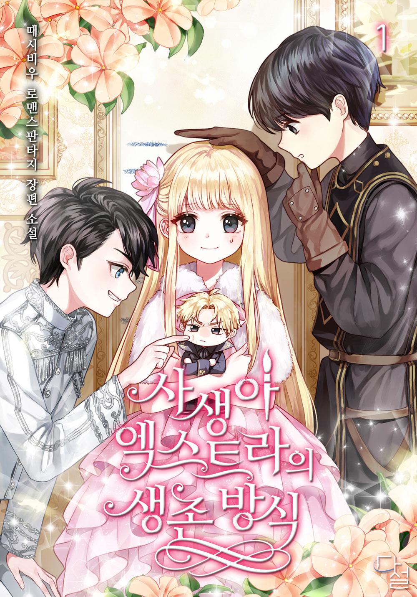
2. 사생아 엑스트라의 생존 방식
작가: 때시비우
로판 / 서양풍 (빙의물, 구원물, 능력녀)
구성: 총 9권 (완결)
회귀한 주인공이 황후가 되는 로맨스 소설 <루테미아의 연인> 속 엑스트라의 몸에 빙의하게 된다. 그러나 살아남기도 바쁜 와중에 원작의 악역으로부터 주인공 루테미아에게 독을 먹이라는 강요를 받게 되면서, 비틀리는 원작의 흐름 속에서 살아남기 위해 자신만의 생존 방식을 모색해 나가는 이야기다.
리디북스에서 보기
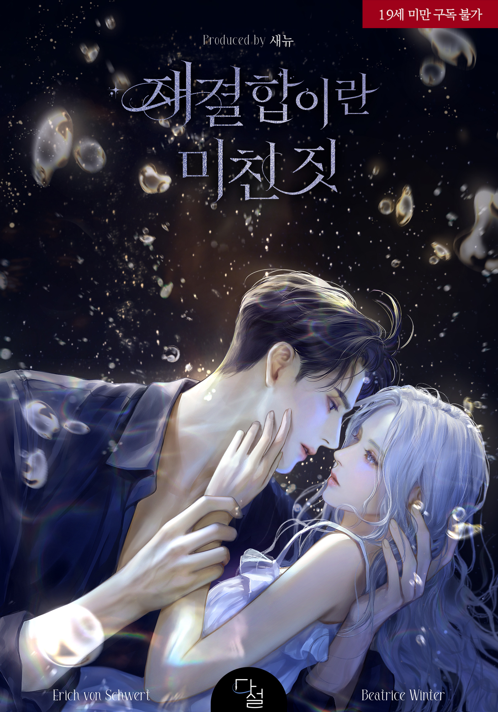
3. 재결합이란 미친 짓
작가: 새뉴
서양풍 로판 / 판타지 로맨스
구성: 총 5권 (완결)
헤어진 연인끼리의 금기, '절대로 몸을 섞지 말 것'. 온몸이 돌처럼 굳어가는 '네임' 저주에 걸린 전 연인과 재회하면서 벌어지는 로맨스 판타지.
리디북스에서 보기
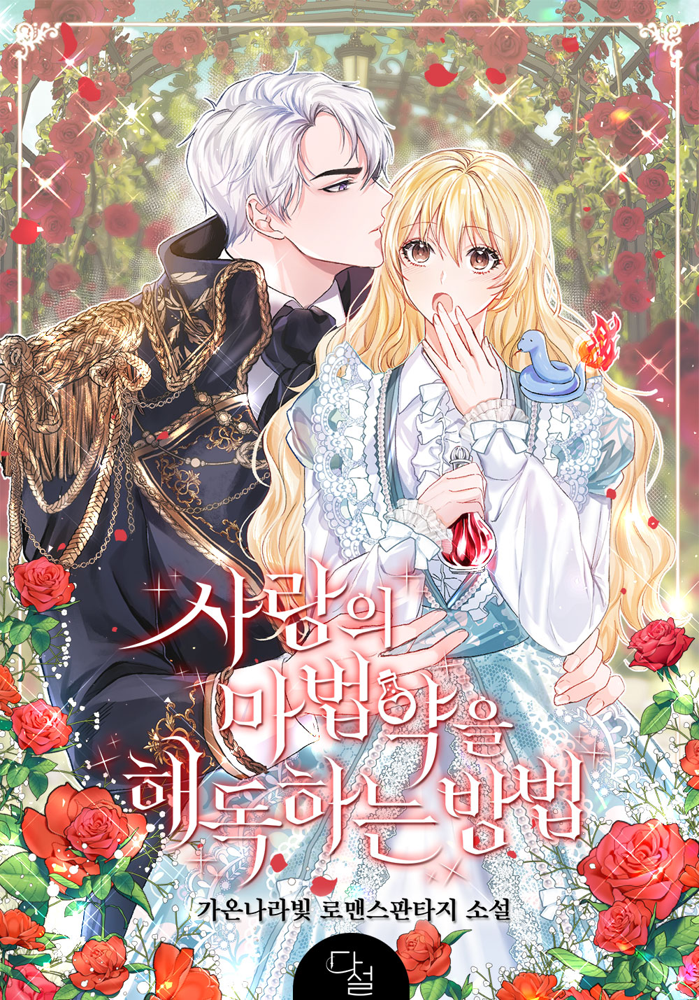
4. 사랑의 마법약을 해독하는 방법
작가: 가온나라빛
서양풍 / 판타지 로맨스 (궁정로맨스, 오해, 대형견남, 철벽녀)
구성: 총 5권 (완결)
가난한 백작가이자 제국 유일의 상급 정령술사 세르이라 벤투스는 원래 다른 사람에게 먹이려던 사랑의 마법약을 실수로 제국의 냉혈한 대공 하벨 프레치아에게 먹이게 된다. 당황한 세르이라가 해독제를 건네주며 수습하려 하지만, 해독제를 마시고도 오히려 그녀를 향한 집착과 애정이 더욱 깊어진 하벨이 직진 로맨스를 펼치며 벌어지는 달달하고 아슬아슬한 오해 로맨스.
네이버 시리즈에서 보기
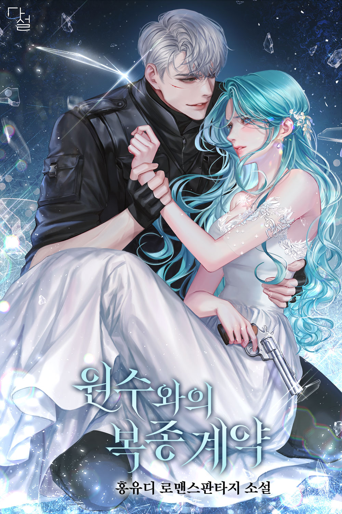
5. 원수와의 복종 계약
작가: 홍유디
판타지물 / 로판 (서양풍, 군부물, 구원물)
구성: 총 4권 (완결)
어릴 적 동생을 잃고 카르타군을 향한 복수만을 위해 살아온 이중 능력 각성자 리테는 복수의 대상인 카르타군의 장교 아스터 클라우드와 적으로 마주한다. 오직 복수를 위해 타인의 목숨까지 빼앗기로 결심하지만, 적으로 만나 죽일 듯 증오하던 아스터가 결국 자신에게 마지막 희망이자 구원이었음을 깨달으며 서로에게 치명적으로 빠져들게 된다.
네이버 시리즈에서 보기
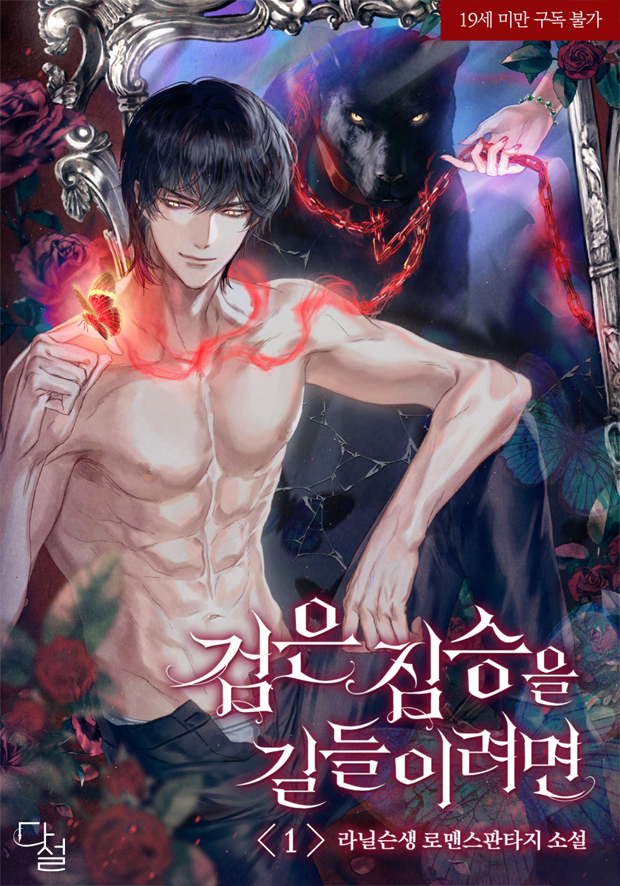
6. 검은 짐승을 길들이려면
작가: 라닐슨생
서양풍 / 판타지 로맨스 (계약, 집착남, 외유내강녀)
구성: 총 4권 (완결)
약혼자의 배신과 부모의 죽음으로 망명길에 오른 몰락한 왕녀 로잘린은 살아남기 위해 냉혹한 페닝턴 대공 루이스에게 구원을 청한다. 오만한 포식자인 루이스는 그녀에게 대가를 요구하며 위험한 올가미를 씌우고, 로잘린은 살기 위해 그의 곁에 머물며 서로를 파고드는 집착과 구원의 로맨스에 휘말리게 된다.
네이버 시리즈에서 보기
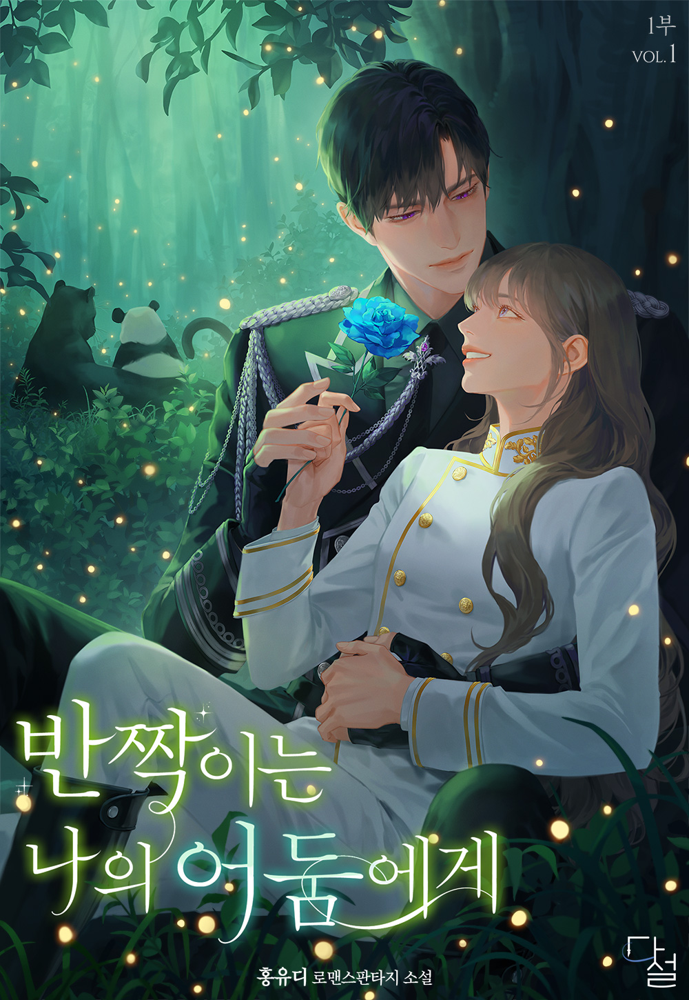
7. 반짝이는 나의 어둠에게
작가: 홍유디
로판 / 서양풍 (군부물, 전생/환생)
구성: 총 11권 (1부 8권, 2부 3권 완결)
1부 <괴물을 사랑하는 완벽한 방법>의 개정판을 포함한 작품으로, 어둡고 잔혹한 운명 속에서 얽힌 두 남녀의 오랜 인연과 첫사랑을 다룬다. 전생과 환생을 가로지르는 비극적인 서사 속에서 나이 차이와 직위의 한계를 넘어 서로를 가슴 깊이 품어내는 굳건하고도 운명적인 사랑 이야기를 그린 로맨스 판타지다.
네이버 시리즈에서 보기
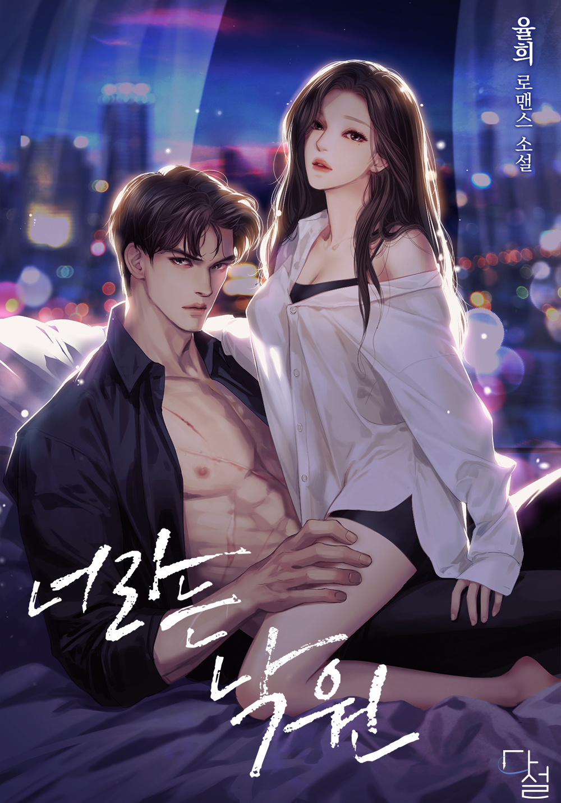
8. 너라는 낙원
작가: 율희
현대물 / 로맨스
구성: 총 3권 (완결)
열심히 살아왔지만 가혹한 운명 속에서 또다시 막대한 빚을 떠안게 된 여주인공 권제이와 그녀의 빚을 대신 갚아 주겠다며 접근하는 남주인공 사이의 지독하고 관능적인 상흔과 구원의 로맨스를 그린 이야기다.
네이버 시리즈에서 보기
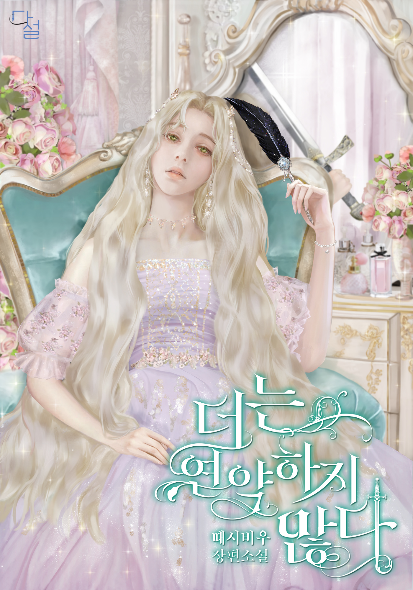
9. 더는 연약하지 않다
작가: 때시비우
서양풍 / 판타지 로맨스 (영혼체인지/빙의, 계약, 능력녀, 후회남)
구성: 총 4권 (완결)
세드릭 공작의 충실한 까마귀 기사 히아신스는 죽음 이후 연약한 대공가의 유리아 공녀의 몸으로 빙의하게 된다. 포크 하나 제대로 들기 힘든 '유리 몸'에 절망하면서도, 자신을 피하며 파혼을 요구하는 약혼자 세드릭과 얽힌 죽음의 진실을 밝히기 위해 본격적인 체력 단련과 생존을 위한 고군분투를 시작하는 유쾌하고 짜릿한 로맨스 판타지.
네이버 시리즈에서 보기
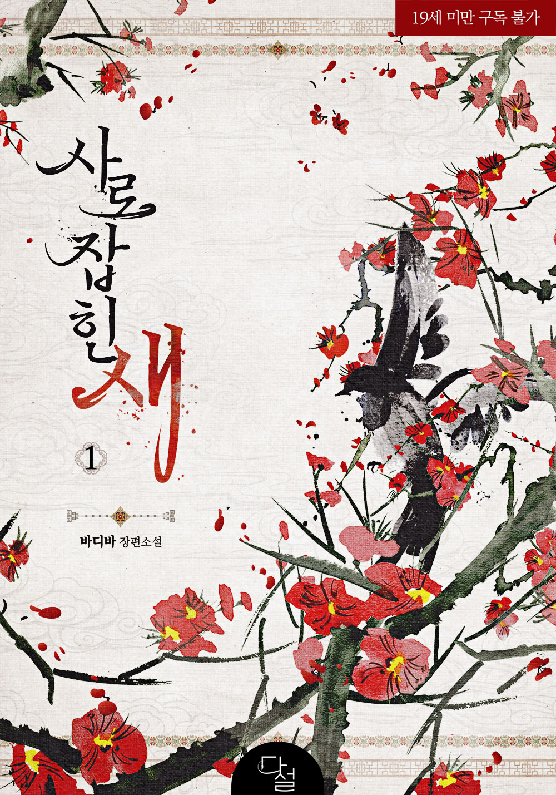
10. 사로잡힌 새
작가: 바디바
동양풍 로판 / 판타지 로맨스
구성: 총 3권 (완결)
땅에 정착하지 않고 하늘을 유랑하는 날개족 요괴 '연조'는 어느 날 눈이 먼 남자를 줍는다. 남자의 상처가 회복되기도 전에 떠나려 하지만, 남자는 얼굴도 보지 못한 연조를 향해 도망칠 테면 도망쳐 보라며 다시 만날 것을 예고한다.
리디북스에서 보기
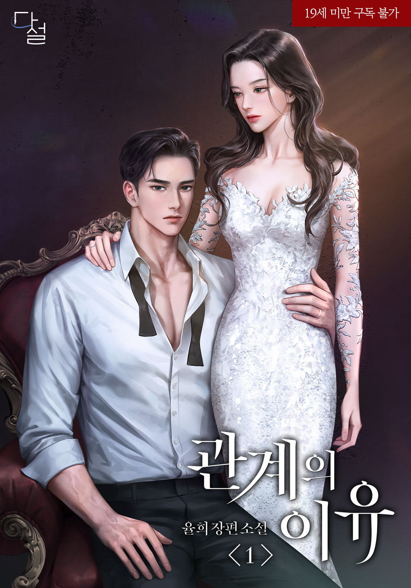
11. 관계의 이유
작가: 율희
현대물 / 로맨스 (정략결혼, 몸정>맘정, 재벌남, 후회남, 상처녀, 신파)
구성: 총 2권 (완결)
조부끼리의 약속으로 대명 그룹 상무 서재운과 정략결혼을 하게 된 선진 제약의 외동딸이자 화가 한이서는 그를 사랑하기에 사랑을 강요하지 않는 조건으로 결혼을 받아들인다. 냉정한 남자의 방치 속에서 외로움과 상처를 견디며 살아가던 중, 뒤늦게 그녀의 존재를 깨닫고 무너져 내리며 후회하는 남자의 절절하고도 애잔한 정통 신파 로맨스.
네이버 시리즈에서 보기
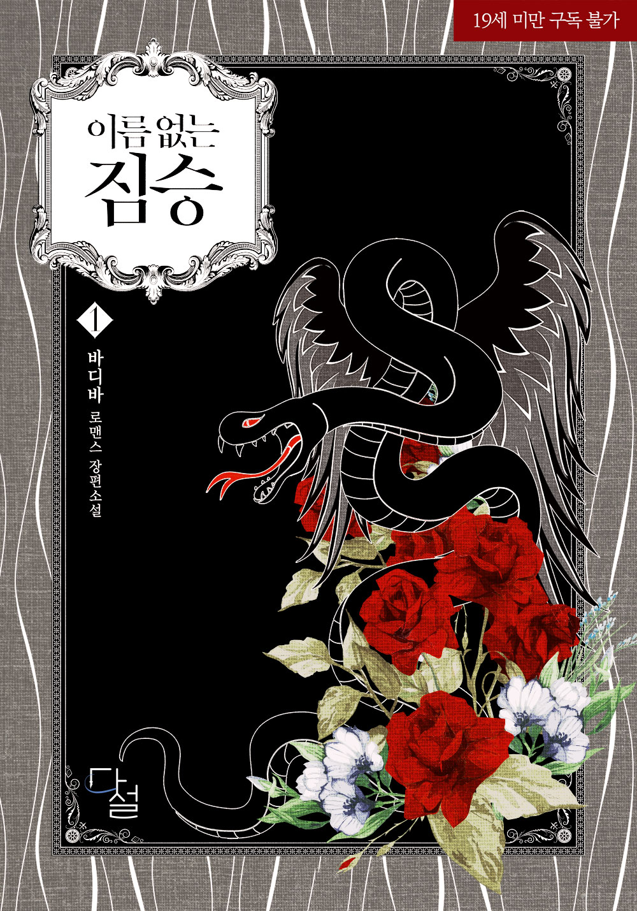
12. 이름 없는 짐승
작가: 바디바
현대물 / 판타지물 / 로판 (신화물, 피폐물)
구성: 총 2권 (완결)
평범하게 학교와 집을 오가던 아연은 어느 날 정체 모를 남자에게 납치당하며 일상이 완전히 무너진다. 남자의 억압 속에서 발버둥 치던 아연은 그가 단순한 납치범이 아니며, 매일 밤 자신의 꿈속에 나타나던 신화 속 태양신 '테스카틀리포카'라는 사실을 깨닫게 되는데…
리디북스에서 보기
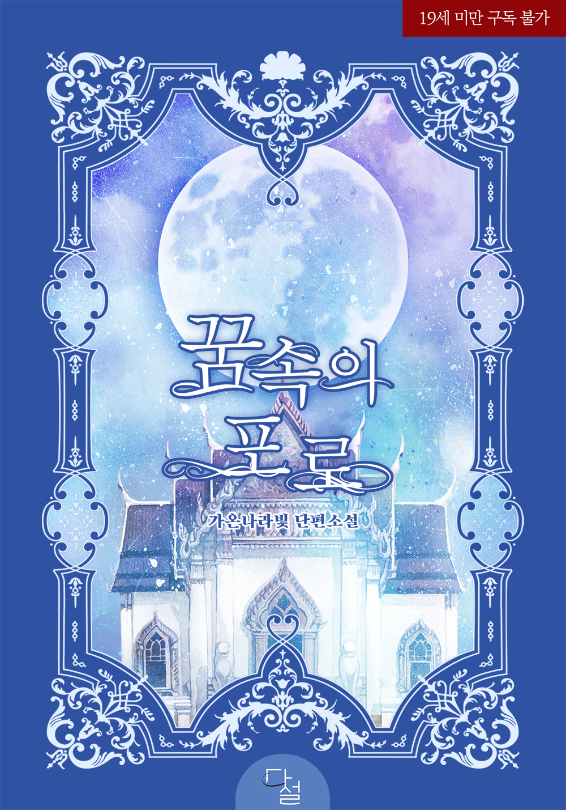
13. 꿈속의 포로
작가: 가온나라빛
판타지물 / 서양풍 로판 (궁정로맨스, 피폐물)
구성: 단권 (완결)
★ 특이사항: 타사 웹툰 출간 작품
황성 창고를 청소하다 우연히 낡은 오르골을 얻은 평범한 하녀 엘라는 매일 밤 위험하고 몽환적인 꿈을 꾸기 시작한다. 흑마법 저주의 고통을 견디기 위해 가수면 상태로 지내던 드로이스 제국의 냉혹한 황제 칼라일은 꿈속에서 만난 엘라에게 강한 집착과 소유욕을 느끼며 그녀를 찾아내려 한다.
리디북스에서 보기
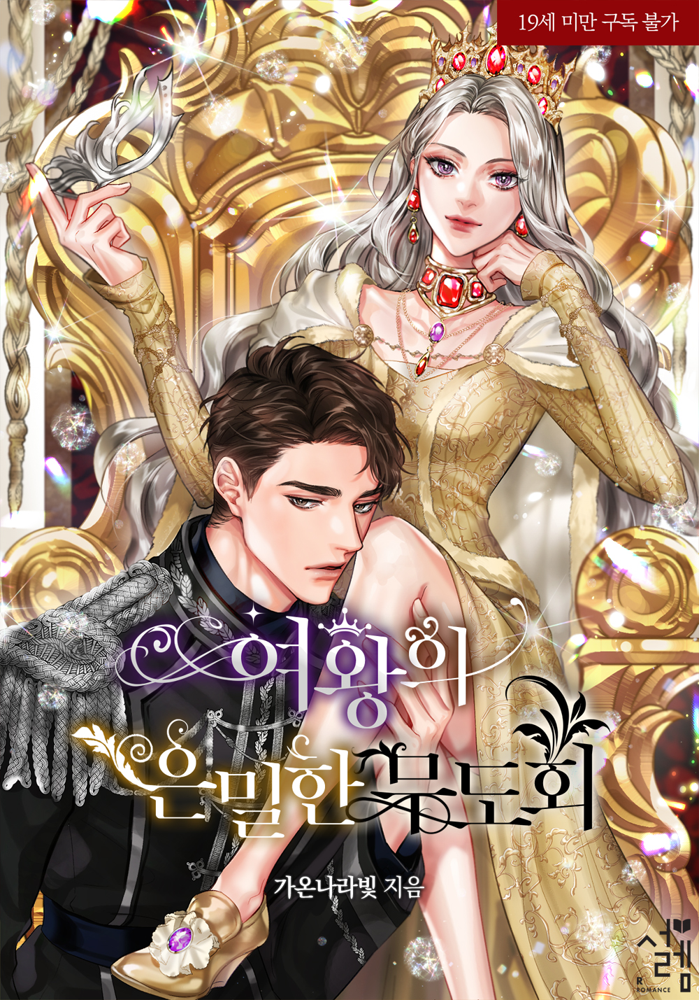
14. 여왕의 은밀한 무도회
작가: 가온나라빛
서양풍 / 판타지 로맨스 (궁정로맨스, 여공남수, 짝사랑남, 도도녀)
구성: 단권
어린 나이에 즉위해 명성을 떨치는 당당한 에그리타 제국의 여왕 로웨나는 은밀한 가면무도회에서 만난 정체 모를 은빛 가면의 남자로부터 강렬한 쾌락과 잊지 못할 밤을 선물 받는다. 사실 그의 정체는 오랜 시간 여왕을 남몰래 짝사랑해 온 충실한 총기사단장 카이로프였으며, 모든 것을 가진 여왕이 그를 온전히 자신의 것으로 만들기 위해 치명적인 덫을 놓기 시작하는 로맨스.
리디북스에서 보기
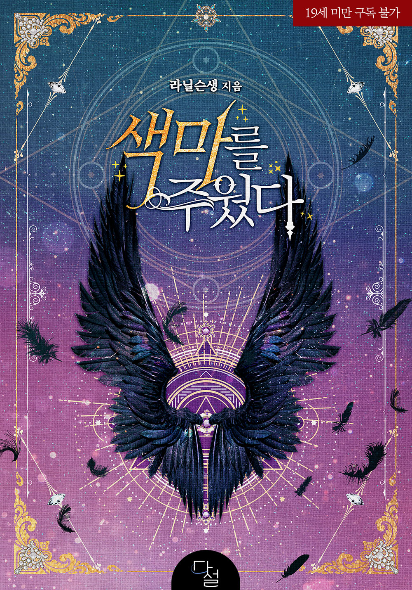
15. 색마를 주웠다
작가: 라닐슨생
판타지 로맨스 / 가상세계물 (초월적존재, 동거, 계략남, 평범녀)
구성: 총 2권 (완결)
사람을 피해 산속에서 조용히 살아가던 아일린은 어느 날 낮에 주워 온 예쁘장한 어린 마족 아이가 밤마다 위험한 본색을 드러내는 고위 '색마' 베르였다는 사실을 알게 된다. 어린아이의 모습 뒤에 은밀하고 치명적인 속내를 숨긴 계략남 베르에게 휘말려, 걷잡을 수 없는 쾌락과 달콤한 올가미 속으로 빠져들게 되는 동거 로맨스.
리디북스에서 보기
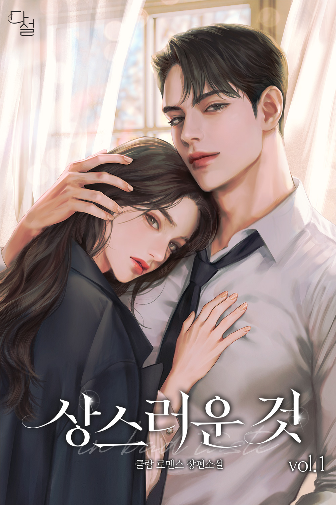
16. 상스러운 것
작가: 클람
현대물 / 로맨스
구성: 총 2권 (완결)
한선우 본부장의 비서 강시영은 밤중에 걸려온 의문의 전화를 통해 상사의 비밀(부회장의 사생아)을 알게 된다. 상스러운 비밀을 들은 죄로 한선우의 동생 한재현에게 밤마다 부려지다 결국 한선우에게 들키고 마는데…
네이버 시리즈에서 보기
17. 거짓 결혼
작가: 강해주
현대물 / 로맨스 (계약결혼, 집착남, 상처녀)
구성: 총 3권 (완결)
양부모의 이미지 메이킹에 이용당하던 서하는 잃어버린 눈을 되찾고 자신만의 삶을 살기 위해 죽음을 불사하고 계약결혼을 제안한다. 달콤한 미소 뒤에 본색을 숨긴 진재하는 강요와도 같은 협박으로 그녀를 옭아매며, 서로 다른 목적을 가진 두 사람의 위태로운 정략결혼이 시작되는 이야기다.
네이버 시리즈에서 보기
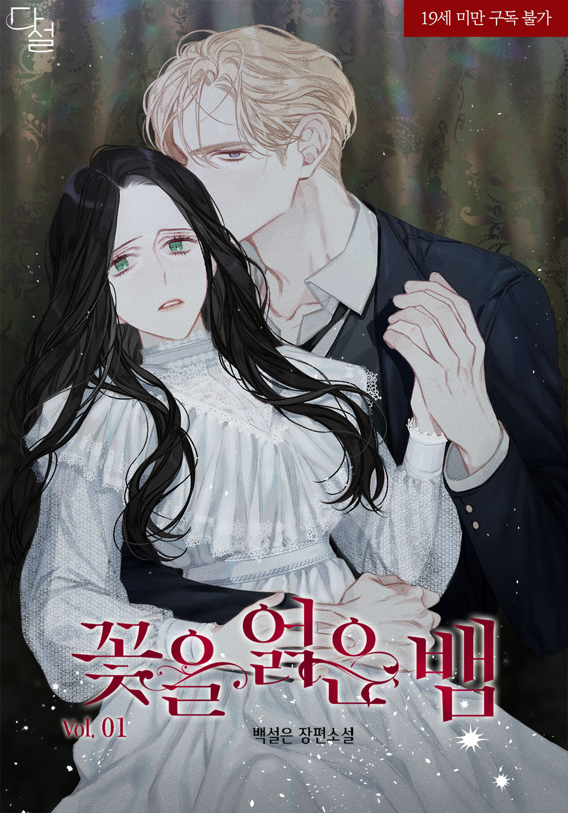
18. 꽃을 얽은 뱀
작가: 백설은
서양풍 / 로맨스판타지 (고딕로맨스, 초월적존재, 집착남, 다정녀)
구성: 총 2권 (완결)
위독한 어머니를 간병하기 위해 찾아간 미스티무어 홀에서 샬럿 헤겔은 식민지 섬에서 실종되었다가 완전히 달라져 돌아온 켄싱턴 백작의 동생 리하르트 켄싱턴을 만난다. 소름 끼치도록 매혹적이면서도 위험한 본색을 드러내는 리하르트에게 샬럿은 벗어나려 하지만, 뱀에 휘감긴 먹잇감처럼 그의 잔인하고도 집요한 올가미 속으로 빨려 들어가게 되는 치명적인 고딕 로맨스.
네이버 시리즈에서 보기
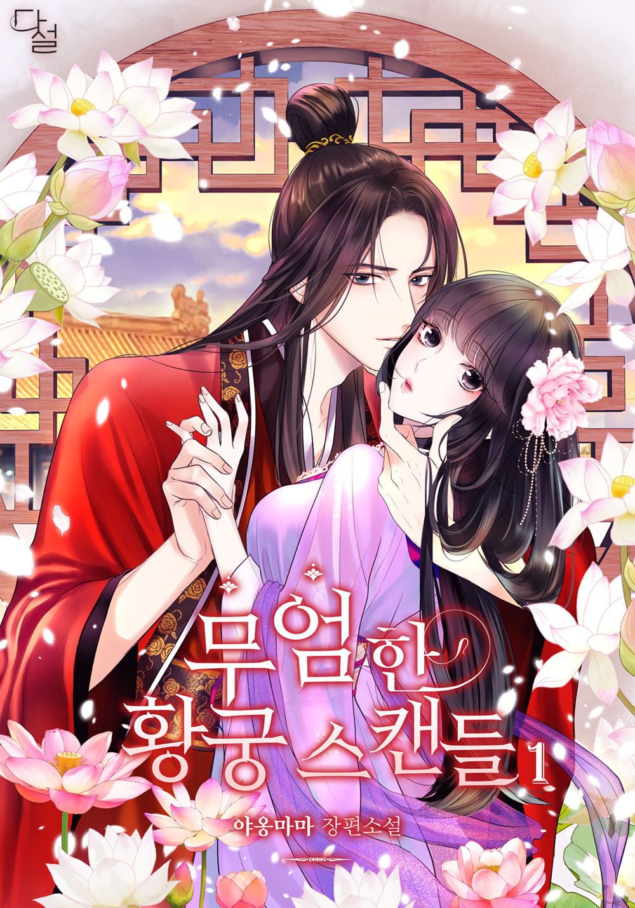
19. 무엄한 황궁 스캔들
작가: 야옹마마
판타지 로맨스 / 차원이동물 (황궁로맨스, 능력녀, 냉철남)
구성: 총 3권 (완결)
불운한 사고로 눈을 떠보니 현실에 존재하지 않는 이세계 '단 제국'에 떨어지게 된 요안. 약화된 황권을 되살리기 위해 애쓰던 냉철한 황제 단의현은 신지식을 가진 그녀를 황실 예언서 속 '보는 자'로 여기며 도움을 청하고, 요안 또한 원래 세계로 돌아가기 위해 그와 손을 잡는다. 황권을 되살리기 위한 협력 속에서 피어나는 아슬아슬하고 거침없는 궁정 로맨스.
네이버 시리즈에서 보기
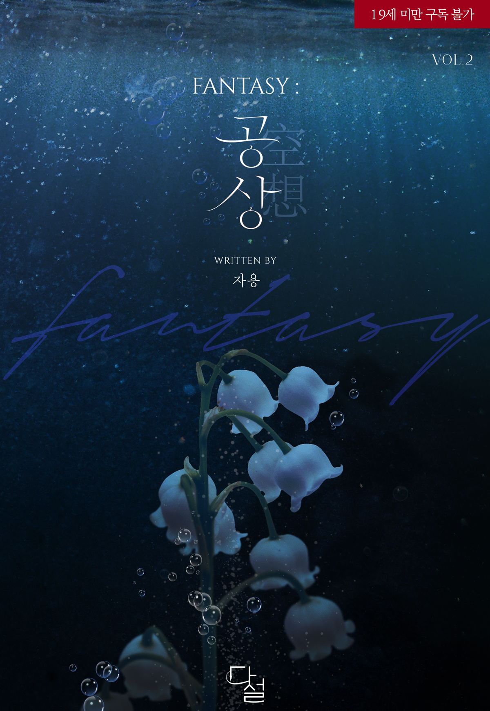
20. 판타지(Fantasy):공상
작가: 자용
현대물 / 로맨스 (피폐물, 구원물)
구성: 총 2권 (완결)
성악을 포기하고 8년 차 뮤지컬 배우로 살아가던 정민은 오래된 연인 승훈과의 지속된 권태로움에 시달린다. 그러던 중 재벌가 후원자의 아들이자 열렬한 팬을 자처하는 여덟 살 연하의 김은호가 접근하고, 정민은 은호의 다정하면서도 집요한 집착과 치명적인 목소리에 아슬아슬하게 이끌리며 감정의 혼란을 겪게 된다.
리디북스에서 보기
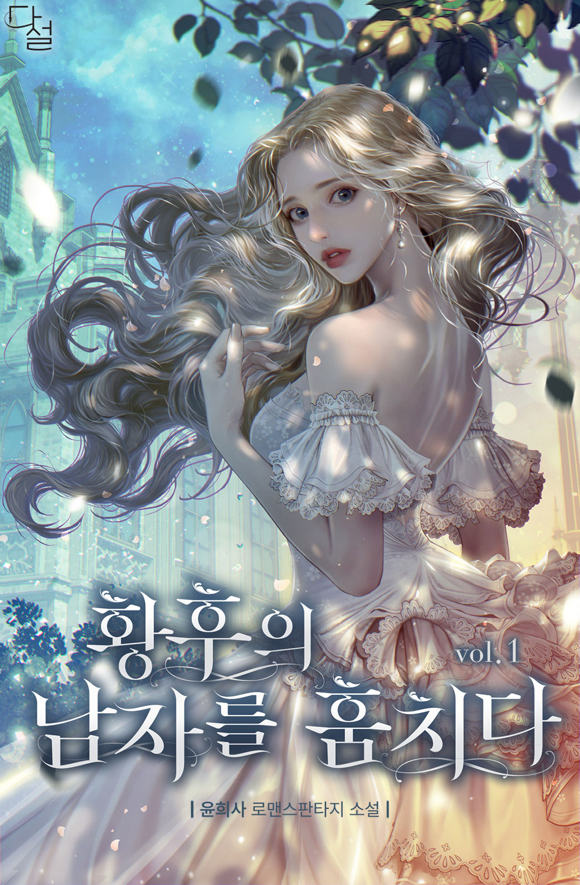
21. 황후의 남자를 훔치다
작가: 윤희사
서양풍 / 판타지 로맨스 (궁정로맨스, 정략결혼, 계략녀, 상처남)
구성: 총 4권 (완결)
거듭된 정략결혼으로 이용당하다 두 번째 남편의 장례식마저 아버지의 야욕에 희생될 위기에 처한 엘리아나는 스스로 삶을 개척하기로 결심한다. 그녀는 황후를 향한 짝사랑으로 황성을 떠도는 선황제의 서자이자 제국의 망나니 그레디 크라이버에게 접근해, 서로 다른 목적과 상처를 감춘 채 위험한 계약과 치명적인 관계 속으로 뛰어드는 이야기다.
네이버 시리즈에서 보기
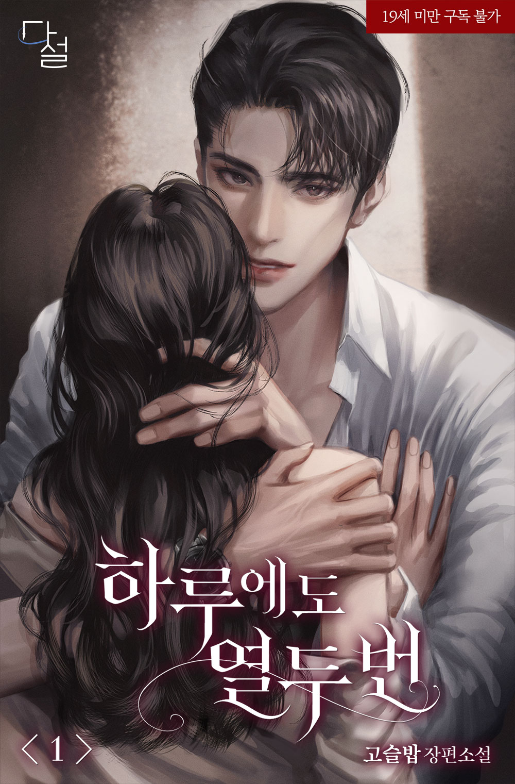
22. 하루에도 열두 번
작가: 고슬밥
현대물 / 로맨스 (재회물, 오해, 애잔물, 재벌남, 후회녀)
구성: 총 2권 (완결)
5년 전 자신을 매몰차게 떠났던 옛 연인 서다은을 이복동생의 약혼녀이자 식물인간이 된 환자를 돌보는 처지로 우연히 재회하게 된 정관 그룹 3세 명서욱의 이야기다. 차가운 원망과 미련, 얽히설킨 오해 속에서 다시 시작된 두 사람의 절절하고도 아슬아슬한 애증 로맨스.
네이버 시리즈에서 보기
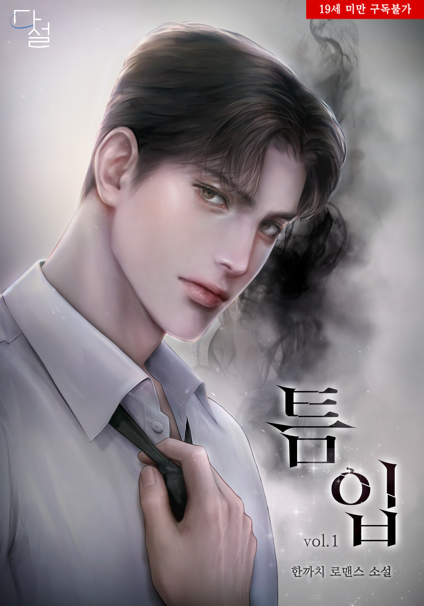
23. 틈입
작가: 한까치
현대물 / 로맨스 (선결혼후연애, 계약결혼, 재벌남, 후회남, 상처녀, 신파)
구성: 총 2권 (완결)
하공그룹 막내아들이자 냉정한 엘리트 사도혁과, 불우한 환경 속에서도 그를 짝사랑해 온 아내 채은수의 이야기다. 무심하고 건조한 결혼 생활에 지쳐 떠나려는 아내와, 그녀가 떠난 후에야 비로소 제 마음을 깨닫고 허둥대며 후회하는 남자의 절절하고도 애잔한 로맨스.
네이버 시리즈에서 보기
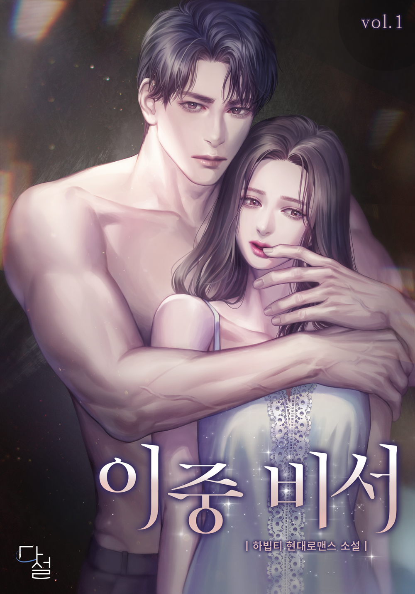
24. 이중 비서
작가: 하빕티
현대물 / 로맨스 (복수, 갑을관계)
구성: 총 2권 (완결)
억울하게 수감된 아버지의 무죄를 밝히려는 유민은 조력자의 제안을 받아 상사인 준서를 유혹하고 그의 선자리를 방해하라는 명령을 받는다. 그러나 얼마 지나지 않아 준서에게 계략이 발각되고, 준서는 사직서를 내려는 유민에게 자신을 위해 이중 스파이 역할을 계속할 것을 역제안하며 두 사람의 위태로운 협력 관계가 시작된다.
네이버 시리즈에서 보기
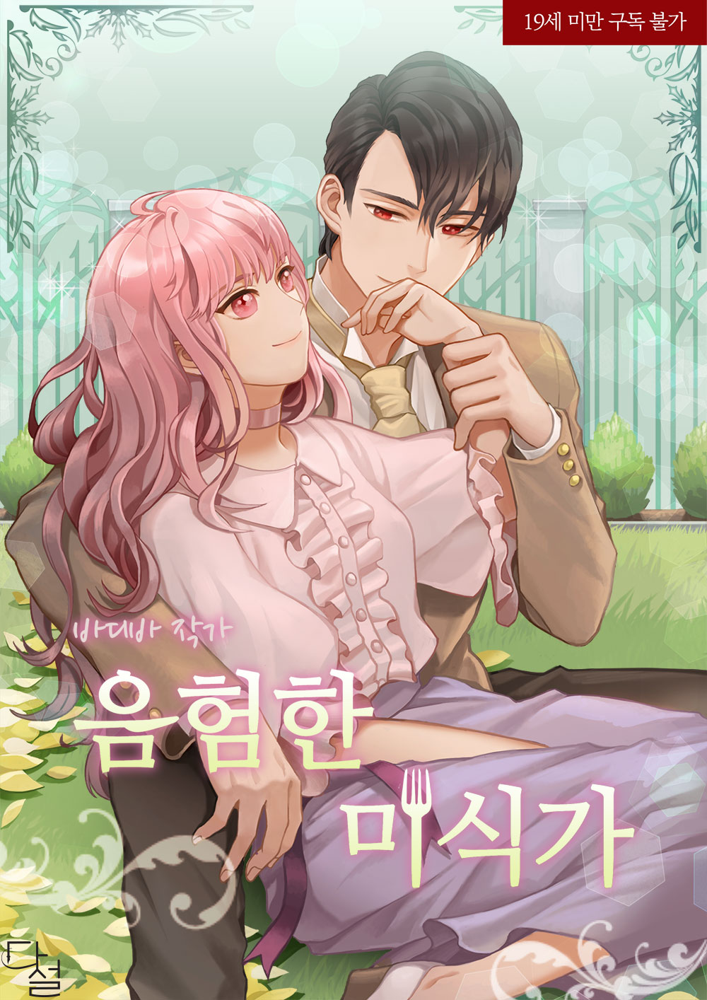
25. 음험한 미식가
작가: 바디바
서양풍 / 판타지 로맨스 (소유욕, 집착남, 계략남)
구성: 단권
12년 만에 기나긴 잠에서 깨어난 주인공은 자신이 아끼던 귀여운 애완동물 '바니'가 예전과 완전히 달라져 집착 어린 소유욕을 드러내는 모습을 마주하게 된다. 다정했던 과거의 흔적은 온데간데없이, 낮게 으르렁거리며 자신을 구속하려는 남자의 서늘하고도 음험한 애착에 휩싸이게 되는 위험하고 아찔한 로맨스.
리디북스에서 보기
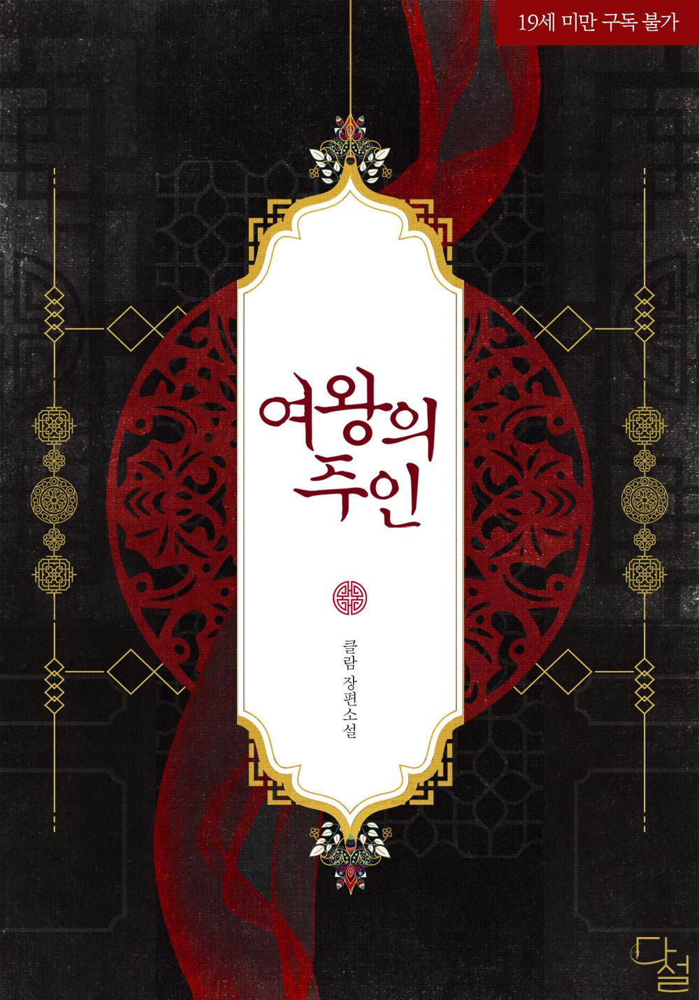
26. 여왕의 주인(朱印)
작가: 클람
동양풍 / 로맨스 (궁정로맨스, 복수, 선결혼후연애)
구성: 단권 (완결)
비열한 계략에 휘말려 제국의 공녀로 끌려온 타타르의 공왕 히란야타는 타타르의 생존과 원수를 향한 복수를 위해 은 제국의 젊은 황제 겸에게 황후라는 이름의 개가 되겠다는 파격적인 제안을 던지며 은밀한 손을 잡게 된다.
리디북스에서 보기
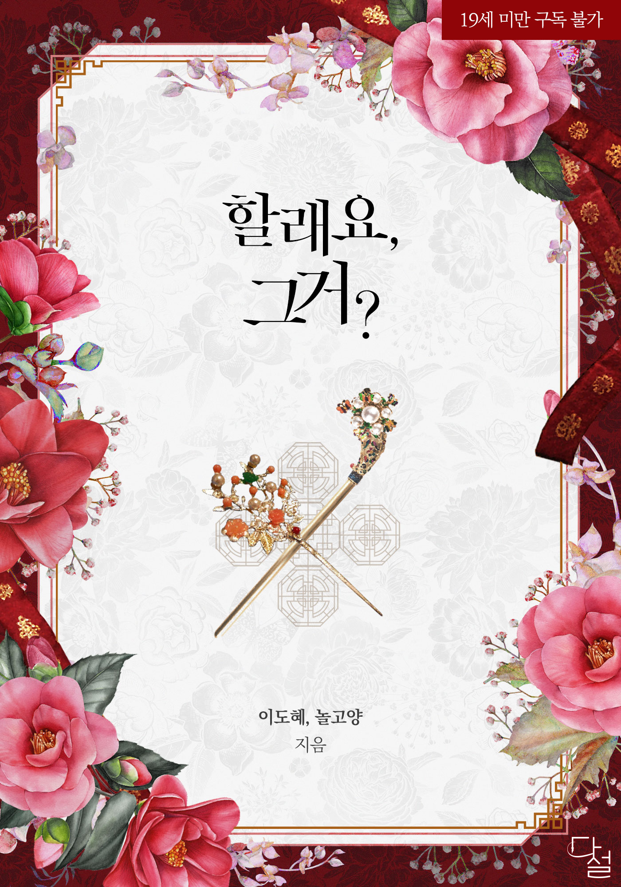
27. 할래요, 그거? -동양풍 로맨스 편-
작가: 이도혜, 놀고양
동양풍 / 로맨스 (단편 연작, 궁정로맨스, 집착남, 순정남)
구성: 총 1권 (완결)
신분과 지위를 넘어선 은밀하고 농염한 사랑을 그린 연작 시리즈의 첫 번째 작품. 관비가 된 혜연을 속여 데려온 남자의 숨겨진 정체를 다룬 <팔푼이 서방님>과, 첫 시침 시녀였던 아희를 잊지 못해 찾아 나선 순정파 황제와 낮져밤이 시녀의 이야기를 담은 <황제의 은밀한 교육> 두 가지 매혹적인 단편으로 구성된 동양풍 로맨스.
리디북스에서 보기
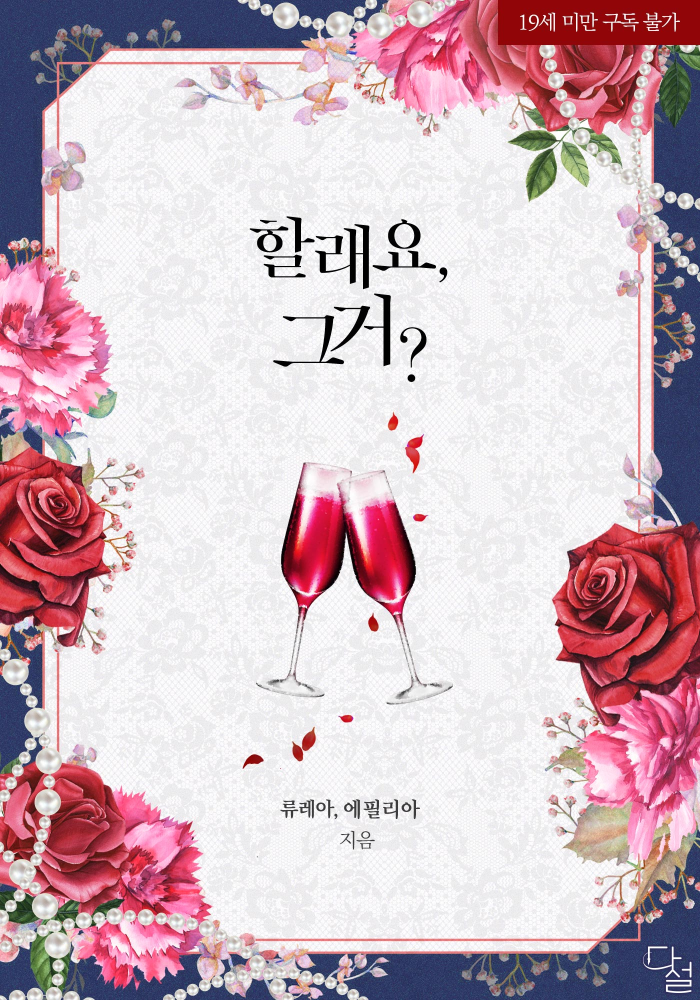
28. 할래요, 그거? -현대 로맨스 편-
작가: 에필리아, 류레아
현대물 / 로맨스 (단편 연작, 재회물, 후회남, 직진남)
구성: 총 1권 (완결)
신분과 지위를 넘어선 은밀하고 농염한 사랑을 그린 연작 시리즈의 마지막 작품. 오랜 짝사랑 상대였던 선배 지훈으로부터 파격적인 제안을 받는 혜정의 이야기를 담은 <감정의 궤도>와, 10년 전 매몰차게 떠났던 전 남자친구가 병원 이사장으로 재회해 다가오는 서이의 이야기를 그린 <다시 만난 너는> 두 가지 매혹적인 단편으로 구성된 현대 로맨스.
리디북스에서 보기
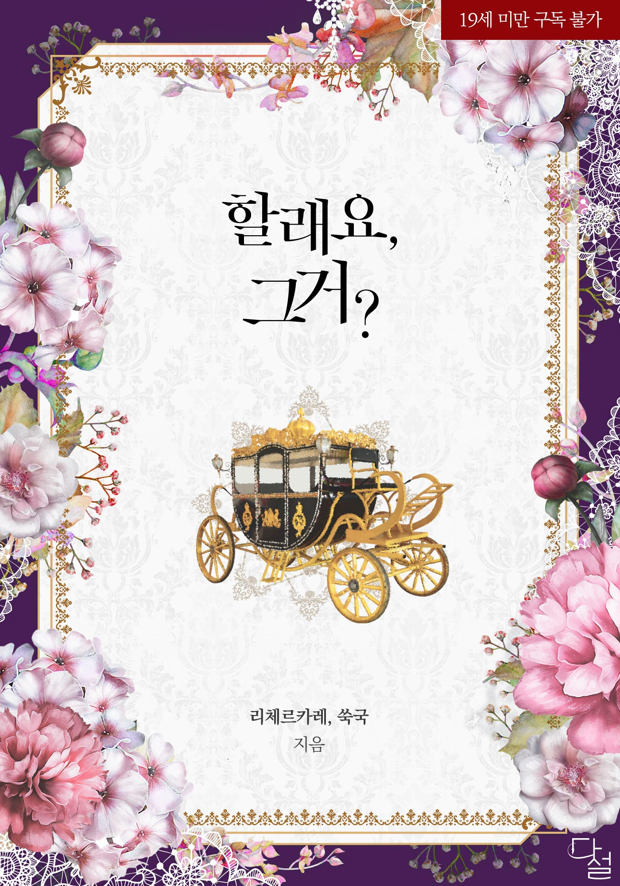
29. 할래요, 그거? -로맨스 판타지 편-
작가: 리체르카레, 쑥국
로맨스 판타지 / 판타지 로맨스 (단편 연작, 궁정로맨스, 직진녀, 3P 요소 포함)
구성: 총 1권 (완결)
신분과 지위를 넘어선 은밀하고 농염한 사랑을 그린 연작 시리즈의 두 번째 작품. 여성 공포증(?)이 있는 완벽한 젊은 황제의 비밀을 파헤치기 위해 자신의 몸을 내던지는 비서관 리디아의 이야기를 다룬 <그 황제의 은밀한 사정>과, 무너진 용병단을 다시 일으킨 단장 카일로를 향한 적극적인 직진 로맨스이자 3P 키워드가 포함된 <에클레의 모르는 용병 공략집> 두 가지 매혹적인 단편으로 구성된 판타지 로맨스.
리디북스에서 보기